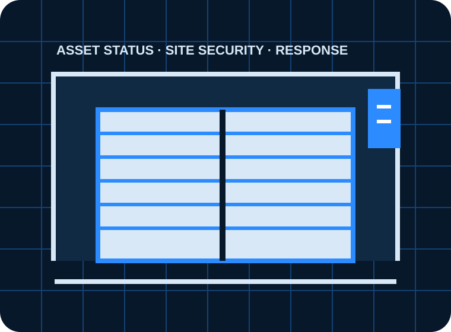

Roller shutters & sectional doors
Verified capability presented with a clear route into the right enquiry workflow.
A blueprint-style concept for repair, servicing, installation and maintenance contracts across industrial and commercial sites.

Only services supported by the business’s public information are used in this concept.
Verified capability presented with a clear route into the right enquiry workflow.
Verified capability presented with a clear route into the right enquiry workflow.
Verified capability presented with a clear route into the right enquiry workflow.
Verified capability presented with a clear route into the right enquiry workflow.
The current form captures a service category and general information, but it does not visibly ask whether the door is stuck open or closed, whether the site can trade securely, the asset quantity, opening dimensions, loading-bay impact, access window or maintenance-contract status.
An urgent-versus-planned door workflow with asset-level qualification, photo upload, CRM routing, engineer acknowledgements, maintenance renewal reminders and service-area SEO.
The form prioritises security, access and operational downtime.